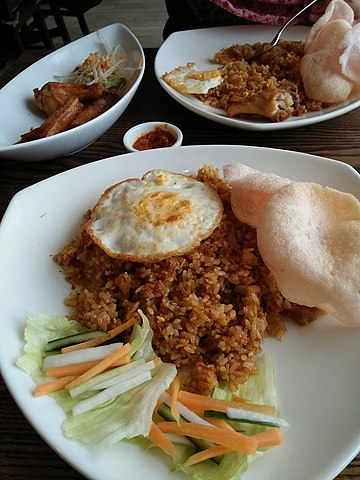

How to Make Nasi Goreng

Description
Nasi goreng is a Southeast Asian fried rice dish, usually cooked with pieces of meat and vegetables. One of Indonesia's national dishes, it is also eaten in Malay-speaking communities in countries such as Malaysia, Singapore and Brunei, and has gained popularity in Sri Lanka
Nasi goreng has long been considered an important staple of Indonesian cuisine.[6] In 2018, it was officially recognized by the Indonesian government as one of the country's five national dishes.[1] A ubiquitous meal throughout Indonesia, particularly for breakfast, it can be enjoyed in simple versions from a tin plate at a roadside food stall, eaten on porcelain in restaurants, or collected from the buffet tables at dinner parties in urban cities like Jakarta.
Ingredients
here's some ingredients to prepare before making nasi goreng
- cooking spray
- 3 large eggs, beaten
- 1 tablespoon vegetable oil
- 1 tablespoon vegetable oil
- 1 tablespoon vegetable oil
- 2 green chile peppers, chopped
- 1 clove garlic, minced
- 1/2 pound skinless, boneless chicken breasts, cut into thin strips
- 1/2 pound peeled and deveined shrimp
- 1 teaspoon ground coriander
- 1 teaspoon ground cumin
- 3 cups cold cooked white rice
- 3 tablespoons kecap manis (sweet soy sauce)
Steps
here's the steps of making nasi goreng
- Heat a large nonstick skillet over medium heat. Coat with nonstick cooking spray.
- Pour eggs into the hot skillet and cook until the edges begin to set. Lift the edges to allow any uncooked egg to flow onto the hot pan, about 1 minute. Flip omelet in one piece and cook until fully set, about 30 seconds. Transfer omelet to a cutting board and slice into 1/2-inch strips. Set aside.
- Heat vegetable oil in a wok or large frying pan over high heat. Stir in onion, leek, chile peppers, and garlic. Cook and stir until onion is soft, 3 to 5 minutes. Stir in chicken, shrimp, coriander, and cumin; mix well. Cook and stir for about 5 minutes.
- Mix in cooked rice, sweet soy sauce, and omelet strips; cook until rice is heated through and chicken is no longer pink in the center, 3 to 5 minutes.
Tips
To cook rice: Bring 2 cups of water and 1 cup white rice to a boil in a saucepan over high heat. Reduce heat to medium-low, cover, and simmer until rice is tender and liquid is absorbed, 20 to 25 minutes. Spread onto a baking sheet, then refrigerate until cold, about 2 hours.